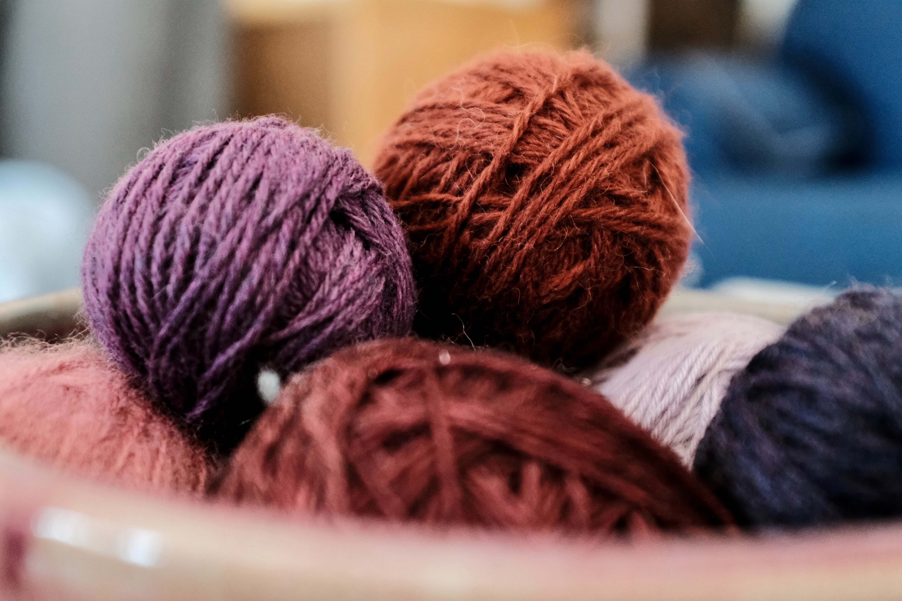
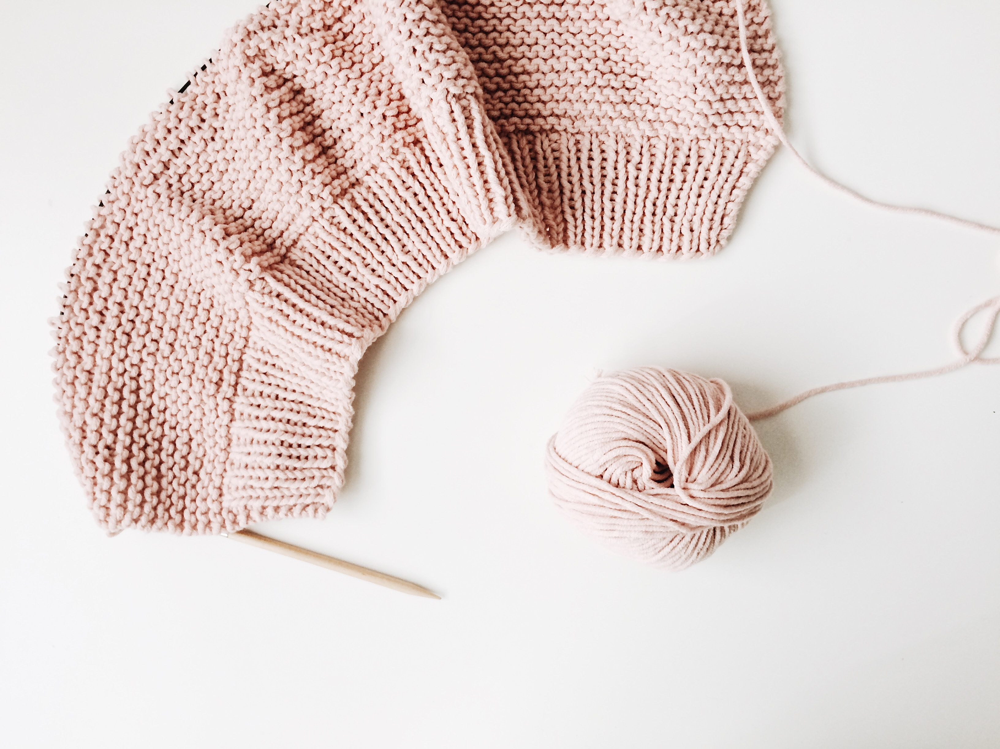

Acrylic vs natural fibers: the never ending debate.
Looking for a break down of the specific pros and cons?
Click to read more
Best stitches for a visually interesting project. Below
is a collection of my personal favorite stitches suited
for intermediate or advanced projects.
Click to read more

